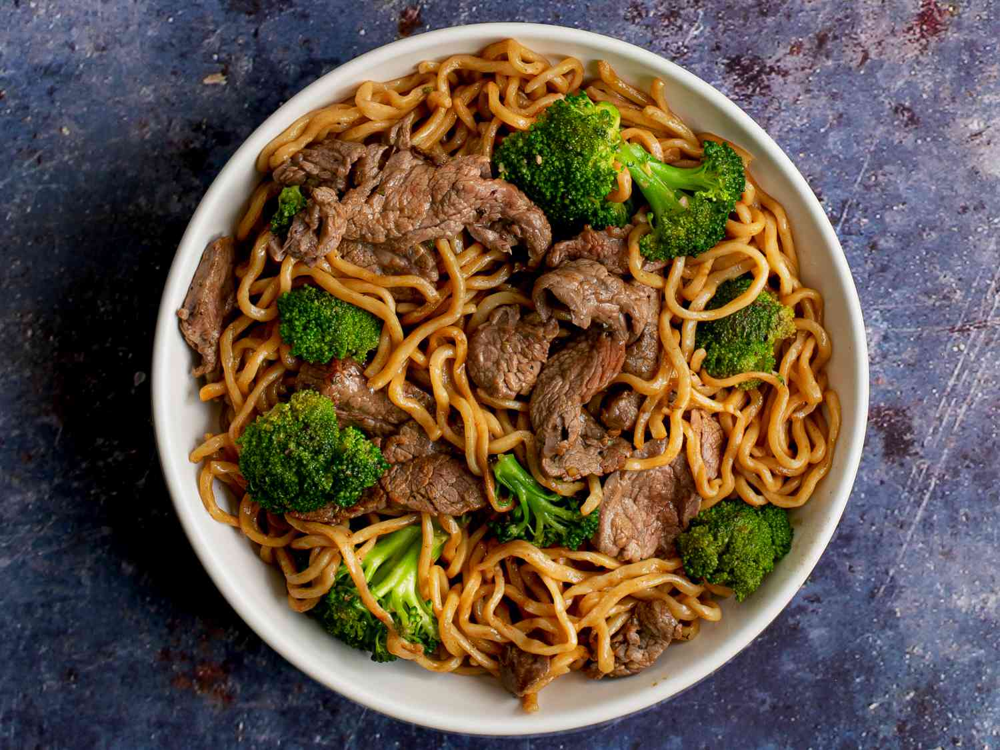

Sports
Watching and playing sports is are two of my favorite things to do. I grew up playing football, baseball, and lacrosse.
However, I enjoy watching almost any sport but my favorite to watch is definitely football. When fall comes around that is probably my favorite thing to be doing and you can catch me laying on the couch watching football all day every sunday!
Videogames
Videogames have always been a great escape for me. Nothing keeps my attention like videogames. I like to try and keep an open mind when it comes to what genres I'm into but my favorites have always been, first person shooters, action/adventure games, and sports games. Recently I have been pretty dissapointed with the state of sports game so I've been avoiding those. Games like God of War, Hogwarts Legacy, and Elden Ring are a few of the best games I have played over the past year or so.
Cooking
I'm always in the kitchen trying new things and working on my cooking skills. I really enjoy chinese food so I've been trying to master chinese takeout recipes at home. I love working on my knife skills, trying new recipes, trying new kitchen gadgets, and most of all eating the food! Here are a few pictures of some food I've made that I'm proud of!
